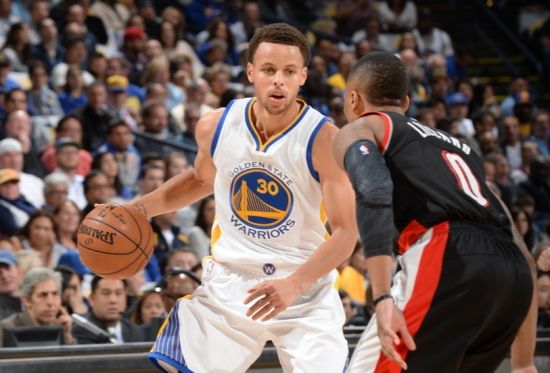
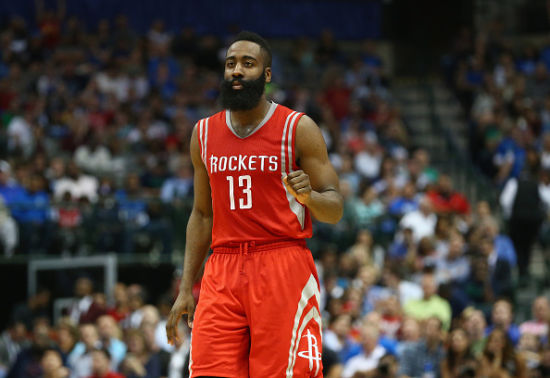

库里又厉害了

新浪体育讯 勇士主场击败开拓者，斯蒂芬-库里再有MVP级演出，45分10助攻的表现堪称完美，更是单场投中8个3分球，以276个三分刷新了自己保持的NBA单赛季投中3分纪录。三分之神的美誉实至名归，而他的传奇还将延续。
此前的单赛季3分球纪录是库里2012-13赛季创造，那个赛季常规赛最后一战，对手同样是开拓者，库里把个人赛季总三分球数定格在272球，超越了05-06赛季雷-阿伦创造的269个3分的纪录。上赛季，库里“只”进了261个三分，而在今年，他就如愿把自己的纪录刷新。
历史上，除库里外能够单赛季投进230个3分球的只有6人，堪称凤毛麟角。伟大如雷吉-米勒都不在其列，他个人单赛季纪录是1996-97赛季的229球。君子雷之前的纪录属于魔术名宿丹尼斯-斯科特，他的95-96赛季扔进267球，这在当时已是神一般的数据了。另外还有小牛名枪乔治-麦克劳德、“大Q”昆汀-理查德森、佩贾-斯托亚科维奇(2次)和穆奇-布雷洛克曾经单赛季投中过230个以上的三分球。
哈登也厉害了

本赛季，哈登已经多次表示他并不关心自己是否会成为常规赛MVP或者得分王，因为他很清楚什么是最重要的。
“我不想听到关于这个话题的讨论。”哈登在采访中说道，“现在最重要的是赢球。我已经说过很多次了。重要的是赢球和在季后赛开始之前找到节奏。因为伤病，我们在整个赛季里都没有找到很棒的节奏。我希望确保每个人都在思想上保持一致，常规赛最后这几场比赛对我们找到节奏很重要。”
“我的队友们和教练们，我的家人和朋友，他们很好地帮助我将注意力放在我需要关注的事情上面，那就是在每场比赛中都发挥出最佳实力。”哈登说，“这才是最重要的。”